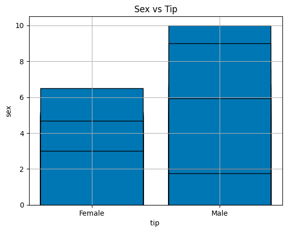
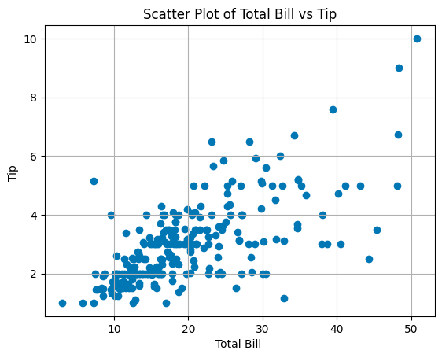
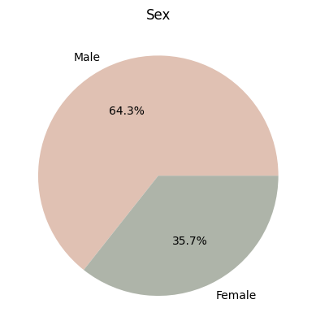
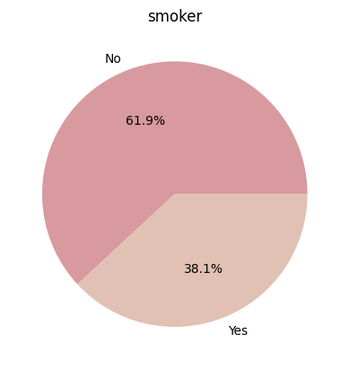
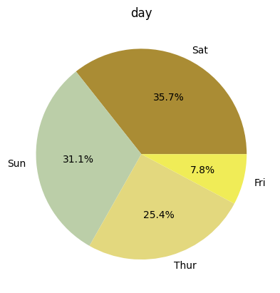
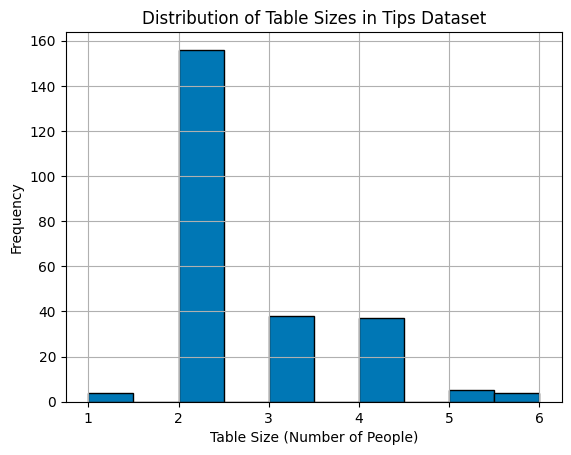
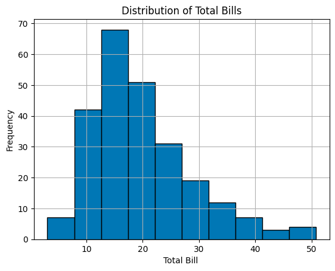
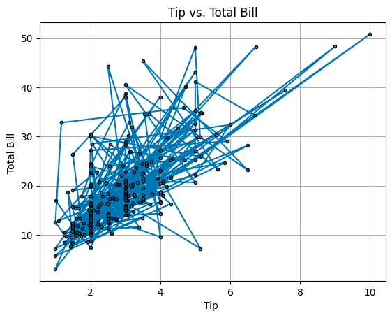
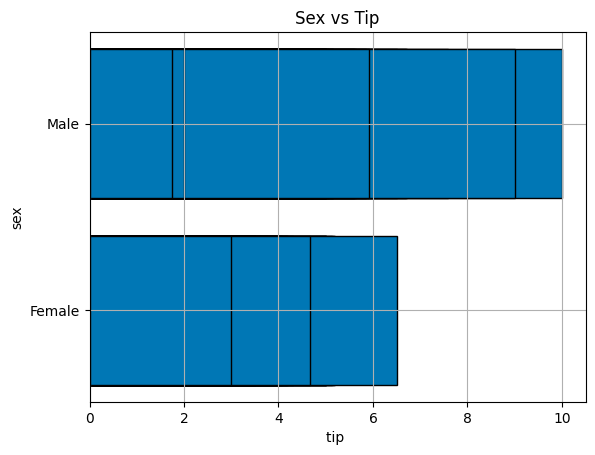

1.Bar Graph se vs tip
This example demonstrates how to create a Bar plot.
import pandas as pd
import matplotlib.pyplot as plt
z=pd.read_csv("tips.csv")
y=z["sex"]
x=z["tip"]
plt.grid()
plt.bar(y,x,edgecolor='black',color="#0077B5")
plt.title("Sex vs Tip")
plt.ylabel("sex")
plt.xlabel("tip ")
plt.show()

2. Scatter Plot
This example shows how to create a scatter plot.
z=pd.read_csv("tips.csv")
x=z["total_bill"]
y=z["tip"]
plt.grid()
plt.scatter(x,y,color="#0077B5")
plt.title("Scatter Plot of Total Bill vs Tip")
plt.ylabel("Tip ")
plt.xlabel("Total Bill ")
plt.show()

3. Pie Chart of sex
This example illustrates how to create a pie chart.
z=pd.read_csv("tips.csv")
y=z["sex"].value_counts()
lable=y.index
plt.pie(y,labels=lable,autopct='%1.1f%%',colors=["#e0c1b3","#aeb4a9"])
plt.title("Sex")
plt.show()

4. Pie Chart of smoker
This example illustrates how to create a pie chart.
z=pd.read_csv("tips.csv")
y=z["smoker"].value_counts()
lable=y.index
plt.pie(y,labels=lable,autopct='%1.1f%%',colors=["#d89a9e","#e0c1b3"])
plt.title("smoker")
plt.show()

5. Pie Chart of day
This example illustrates how to create a pie chart.
z=pd.read_csv("tips.csv")
y=z["day"].value_counts()
lable=y.index
plt.pie(y,labels=lable,autopct='%1.1f%%',colors=["#aa8c34","#bbcea8","#e3d87e","#f0ec57","#748067"])
plt.title("day")
plt.show()

6. Histogram of size
This example demonstrates how to create a histogram.
z=pd.read_csv("tips.csv")
y=z["size"]
plt.hist(y, edgecolor='black',color="#0077B5")
plt.grid()
plt.title("Distribution of Table Sizes in Tips Dataset")
plt.xlabel("Table Size (Number of People)")
plt.ylabel("Frequency")
plt.show()

7. Histogram of total_bill
This example demonstrates how to create a histogram.
z=pd.read_csv("tips.csv")
y=z["total_bill"]
plt.hist(y, edgecolor='black',color="#0077B5")
plt.grid()
plt.title("Distribution of Total Bills")
plt.xlabel("Total Bill ")
plt.ylabel("Frequency")
plt.show()

8. line Graph
This example shows how to create a line chart.
z=pd.read_csv("tips.csv")
x=z["tip"]
y=z["total_bill"]
plt.grid()
plt.plot(x,y,marker="o",color="#0077B5",mec='black',ms=3)
plt.title("Tip vs. Total Bill")
plt.ylabel("Total Bill ")
plt.xlabel("Tip ")
plt.show()

9.Horizontal Bar Graph
This example shows how to create a bar h chart.
z=pd.read_csv("tips.csv")
y=z["sex"]
x=z["tip"]
plt.grid()
plt.barh(y,x,edgecolor='black',color="#0077B5")
plt.title("Sex vs Tip")
plt.ylabel("sex")
plt.xlabel("tip ")
plt.show()
plt.show()
